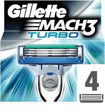

Marca.com
Fútbol
El madrid no gana ni a las chapas
Récord de Ricky, debut de Mirotic, Marc Gasol... lo mejor de los españoles en la NBA
La última semana de la NBA tuvo un claro acento español con el traspaso de Nikola Mirotic a los New Orleans Pelicans, y su posterior buen debut con el equipo de Louisiana. y las brillantes actuaciones de Ricky Rubio contra los Golden State Warriors y los San Antonio Spurs, contra los que batió su récord de puntos en un partido. Además, Marc Gasol se fue hasta los 18,5 puntos y 9,8 rebotes por partido con los Grizzlies, mientras que su hermano Pau aportó 10,7 tantos y 8,7 capturas para los Spurs. Por su parte, Alex Abrines recuperó protagonismo en los Thunder.
Comprate una gillete y llevate dos¡¡¡¡¡¡¡
